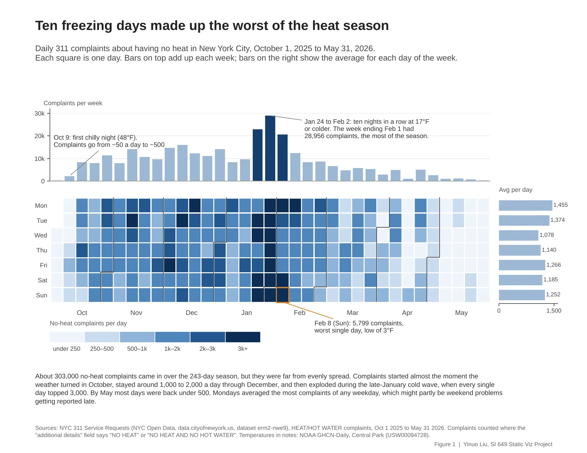
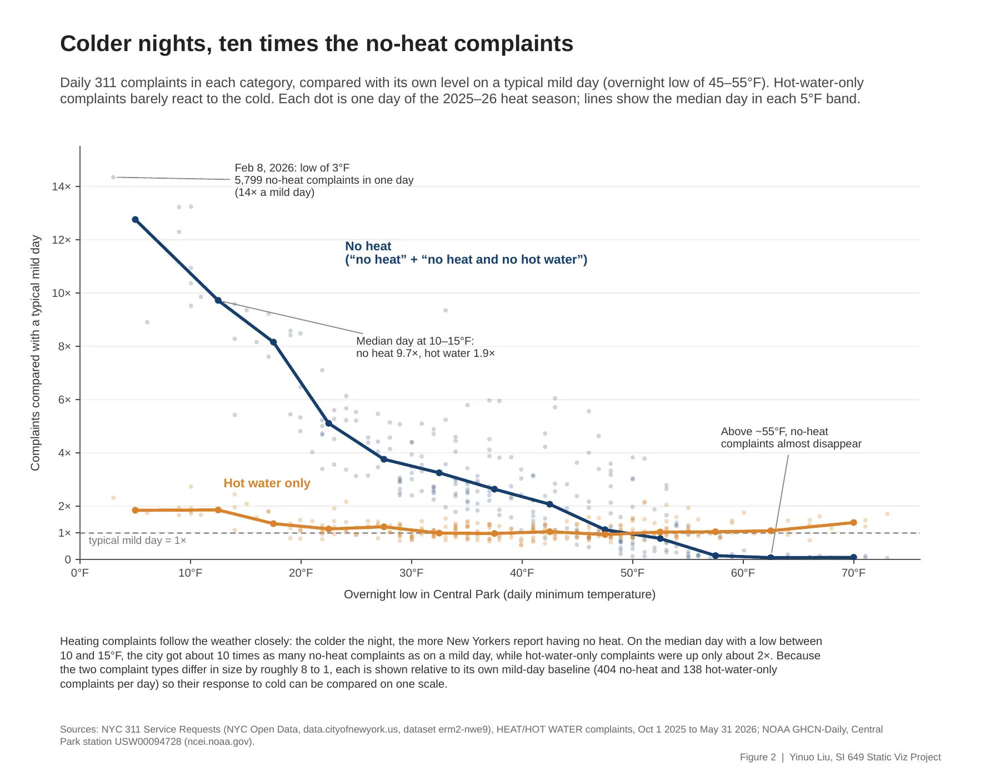
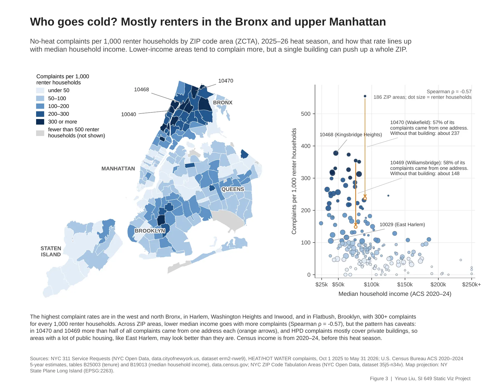
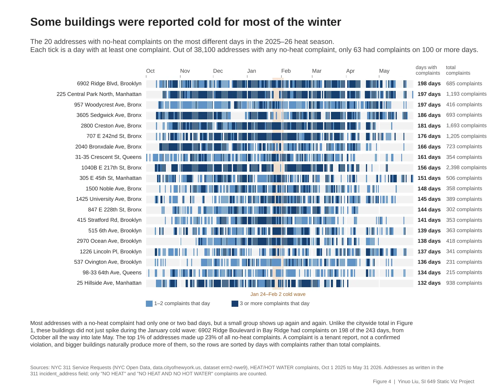

问题
纽约每年 10 月 1 日到次年 5 月 31 日是供暖季：室外低于 55°F 时，房东白天要把室内保持在 68°F，夜里不管天气如何都至少要有 62°F。没有暖气的租户可以打 311 投诉，所以 311 的数据基本就是一份“谁在什么时候挨冻”的记录。
我问了四个问题，每张图回答一个：冬天里大家什么时候投诉？天气能解释多少？投诉集中在哪里，和收入有没有关系？是不是总是那几栋楼？
数据和方法
- 没有下载整个数据集，而是通过纽约开放数据的 API，只取 2025 年 10 月 1 日到 2026 年 5 月 31 日的“暖气/热水”投诉，一共 341,824 条。
- 按“补充说明”字段分类：其中 303,434 条是没有暖气，其余只和热水有关。
- 把供暖季的每一天和 NOAA 中央公园气象站的夜间最低气温对上，243 天一天不缺。
- 地图上，用每个邮编区的租房户数去除无暖气投诉数，因为暖气投诉几乎都来自租户。租房户少于 500 的区域标成灰色。
- 全市统计时保留同一地址同一天的重复投诉；楼栋那张图改用“至少有一条投诉的天数”，因为重复投诉在那里影响最大。
- 用 DuckDB 跑 SQL 把主要统计重算了一遍，核对 pandas 的结果。
发现








图是怎么改出来的
大部分图在定稿前改过两版。举两个例子：


局限和下一步
投诉只是租户的报告，不等于确认的违规，所以下一步应该加上市政住房部门的违规数据。公共住房的租户大多向 NYCHA 报修，不走 311，所以公共住房多的地区在地图上可能显得比实际好。我也想把楼栋那张图扩展到好几个冬天。